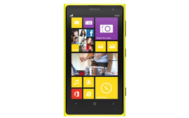

LUMIA 1020
 The Lumia 1020 is the spiritual successor to Nokia's first phone with a 41-megapixel camera sensor, the Nokia 808 PureView. While the 808 won rave reviews for its camera, the fact that it ran the dated Symbian operating system on underpowered hardware had many wondering - "What if this phone (rather, this camera) ran Windows Phone?" In that respect, the Nokia Lumia 1020 is the realisation of a dream that many have harboured since using the 808.
 The Lumia 1520 has two big things working against it, neither of which is a deal-breaker on its own, but when combined, make it a very interesting product to review. First, it's a Windows Phone. While the platform certainly does have its fans, there's no denying that it isn't as versatile as iOS and Android yet. As a person buying this phone, you will have to put up with a number of limitations and frustrations because of its software. Second, it's huge. So-called "phablets" are big business, but not everybody wants a phone that can't fit in a pocket and be held in one hand.
The Lumia 1520 has two big things working against it, neither of which is a deal-breaker on its own, but when combined, make it a very interesting product to review. First, it's a Windows Phone. While the platform certainly does have its fans, there's no denying that it isn't as versatile as iOS and Android yet. As a person buying this phone, you will have to put up with a number of limitations and frustrations because of its software. Second, it's huge. So-called "phablets" are big business, but not everybody wants a phone that can't fit in a pocket and be held in one hand.